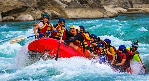
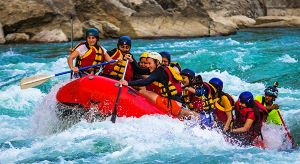

Rafting is an Exhilarating water sport where people navigate rivers in inflatable rafts, tackling rapids ranging from gentle to extreme.
It's a unique way to experience nature and get an adrenaline rush, perfect for team building and creating lasting memories.
 
